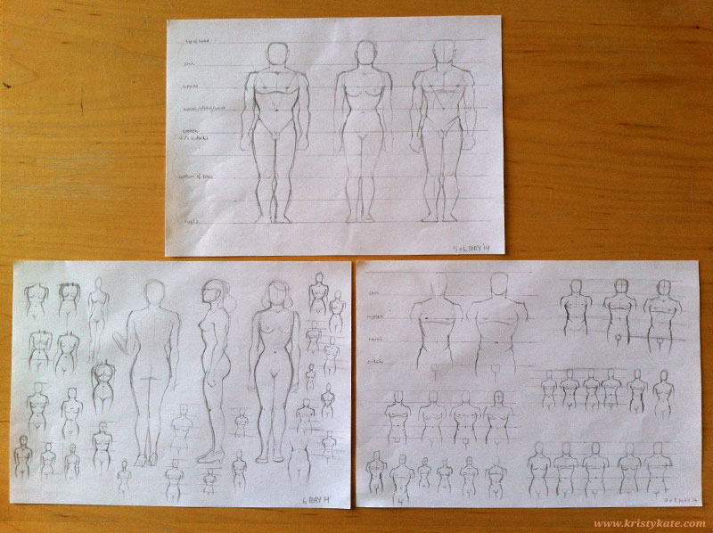

Week 7 Studies
May 5th - 11th
This week I focused on torso studies, working from the male & female ideal proportion illustrations in Loomis' Figure Drawing For All It's Worth (p26-27):

I'm taking the repetition approach to learning here, drawing the torso over and over with and without the proportion guidelines, to test and build my understanding. This has caused me to ask more questions, such as 'why parts of the body appear the way they do?' - so for Week 8 I'm going to delve into the anatomy books and study the underlying skeleton and muscles of the hips.
Curiosity is such a great inspiration!
All the best,
x Kristy Kate
+ + +
Have any thoughts on my studies? Join me on my creative journey by leaving a comment (constructive criticism welcome) or connecting via Twitter or Facebook.